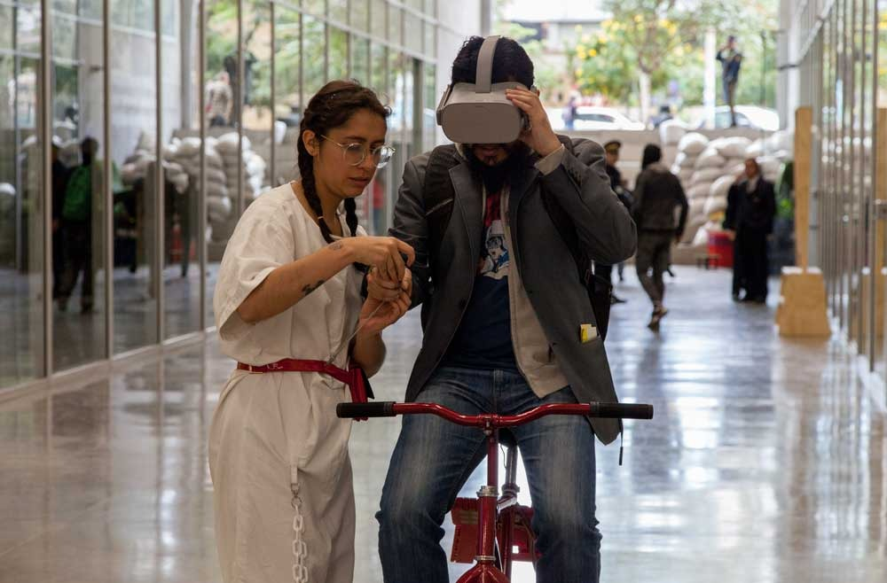

Odd horizons es una compilación inmersiva y absurda de nociones que se han tenido con respecto a la forma de la tierra, viendo de igual manera la forma como estas nociones explican un poco las configuraciones sociales y el contexto cultural desde donde se pensaron.
La forma como se ve la tierra es un poco la forma en como nos vemos como humanos, si somos el centro de todo o somos insignificantes, o si nos permitimos divagar mas sobre el lugar que ocupamos como una especie autoconciente.